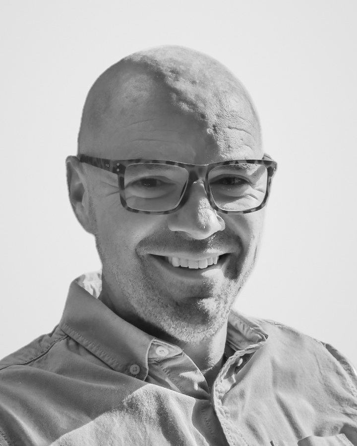

Colin Mattinson
Founding Director
Intelligence, risk and decision-making for organisations operating in complex, high-stakes environments.
Colin Mattinson brings 25 years of police service, including senior command, to his consultancy work. He combines proven leadership in high-risk operations with a practical, evidence-led approach to intelligence, risk and decision-making.
As Chief Superintendent and Head of Crime and Public Protection, Colin commanded major investigations and led operations across Staffordshire, the West Midlands and beyond, shaping the force response to serious crime, safeguarding and public protection. In Stoke-on-Trent, he built multi-agency partnerships and governance that reduced risk to vulnerable people.
As Director of Intelligence, he led a significant change programme that moved intelligence from a supporting function to the centre of policing decisions. He made risk awareness, and accountable decisions in response to it, part of everyday organisational culture rather than an occasional exercise.
Since 2023, Colin has worked with Ricardo, a global environmental and engineering consultancy, on projects where public safety, climate resilience and regulation intersect. For the Environment Agency, he led a major debrief of its response to critical incidents, with lessons now being embedded in future preparedness and governance. He also plays a key role in Project Skylark, supporting emergency response planning and regulatory alignment for CO₂ transport and carbon capture, utilisation and storage (CCUS). Across this work, he brings together technical specialists, strategic leaders and regional stakeholders, turning complex requirements into workable arrangements.
An MSc in Environmental Diagnostics from Cranfield University gives Colin a scientific grounding alongside his operational experience. This helps him ask the right questions across technical, operational and governance boundaries and turn the answers into clear strategy. As a founding director of CIRIS, he brings a collaborative, measured approach focused on resilience, assurance and helping clients in the public and private sectors move forward with confidence.